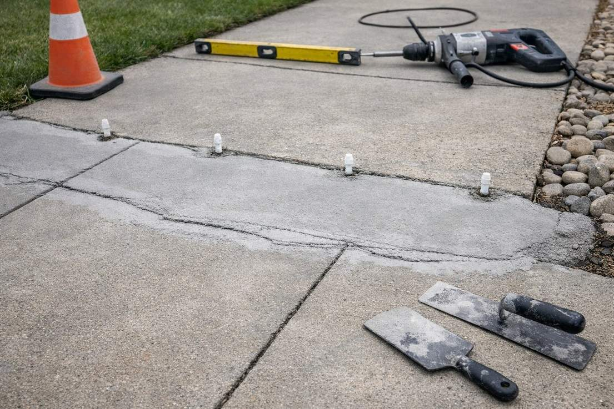

Concrete Repair & Leveling in Logan, UT
Cracked, sunken or settling concrete? Tell us about your project and we’ll work to connect you with a licensed local concrete contractor who can level, resurface or replace driveways, patios, sidewalks and slabs across Cache County — and fix what caused the problem, not just the surface.

Concrete Repair & Leveling in Logan & Cache Valley
Cracked, sunken or flaking concrete is one of the most common problems after a few Cache Valley winters — and the good news is that it’s often repairable for a fraction of the cost of a full replacement. Cache County Concrete helps homeowners across Logan, North Logan, Smithfield, Providence, Hyrum, Nibley and Cache Valley find licensed local contractors who repair and level driveways, patios, sidewalks, garage floors and steps.
Repair Services Offered
- Concrete leveling — raising sunken slabs back into place (slabjacking / foam jacking).
- Crack repair — cleaning, filling and sealing cracks before they spread.
- Resurfacing — a fresh wear surface over sound but worn concrete.
- Spall repair — fixing flaked, pitted surfaces.
- Trip-hazard grinding — leveling raised joints and edges.
- Joint & crack sealing — keeping water out so winter can’t make damage worse.
Repair or Replace?
A good contractor gives you the honest answer. Repair usually makes sense when a slab has sunk or settled but is otherwise solid, or when cracks are surface-level and not spreading. Replacement is the better investment when concrete is crumbling, has deep structural cracks, or sits on a failed base. If your slab needs replacing, see the driveway and patio pages — but whenever a repair will genuinely solve the problem, the right contractor will tell you, because it saves you money.
What Causes Concrete to Fail in Cache Valley
- Freeze-thaw cycles — water gets into cracks and pores, freezes, expands, and breaks the concrete apart.
- Poor base / settling — concrete poured on uncompacted soil sinks and cracks.
- Water & drainage — runoff that washes out the base under a slab.
- Deicing salts — accelerate surface spalling, especially on younger concrete.
- Tree roots — lift and crack nearby slabs.
What Does Concrete Repair Cost?
Repair almost always costs a fraction of tear-out and replacement, which is exactly why it’s worth getting evaluated first. Leveling a sunken slab is typically far cheaper than pouring a new one, and crack or spall repair is cheaper still. Cost depends on the size of the area and the type of fix. The contractor provides a free assessment and written quote.
How Concrete Leveling Works
- Assess — the contractor determines why the slab sank and whether leveling is the right fix.
- Drill — small, discreet holes are drilled in the sunken slab.
- Lift — material is pumped beneath the slab to fill voids and raise it back to level.
- Patch — the holes are patched, and the slab is ready to use, often the same day.
It’s faster, cleaner and less expensive than tear-out — and there’s no curing wait like a new pour.
Repair FAQ
Is leveling cheaper than replacing?
Almost always. Raising and leveling a sunken slab typically costs a fraction of removing and pouring a new one — which is why an assessment is worth getting before assuming you need a replacement.
Can a sunken slab really be raised?
Yes. If the slab itself is still solid, a contractor can pump material underneath to fill the voids and lift it back to level, rather than tearing it out.
How long does concrete leveling last?
When the underlying cause is addressed, a properly leveled slab can last for years. Modern foam materials are stable and water-resistant. Your contractor can explain what to expect for your specific slab.
Can cracks be fixed permanently?
Cracks are cleaned, filled and sealed to stop water intrusion and slow their spread. No crack repair is truly forever, but addressing it early prevents the freeze-thaw damage that turns a small crack into a replacement.
Can flaking or pitted concrete (spalling) be fixed?
If the damage is on the surface and the slab is structurally sound, resurfacing can restore it. If spalling is deep or widespread, replacement may be the better value — a good contractor assesses it honestly.
How long does a repair take?
Many repairs, including slab leveling, are completed in a single day with no long curing wait, so you can use the area again quickly.
Can my driveway be saved, or do I need a new one?
It depends on the damage. Surface issues and settling are often repairable; a slab that’s crumbling or badly cracked throughout is usually better replaced. A good contractor gives you a straight answer either way.
Please note: Cache County Concrete is a free lead-referral and information service, not a licensed contractor, and does not perform concrete work. All quotes and work are provided by independent, licensed local contractors. Verify licensing and insurance directly with the contractor before any work begins.
Why Concrete Fails in Logan — and What a Good Repair Looks Like
Logan sits on the floor of Cache Valley, where cold air settles on winter nights and slabs can freeze and thaw dozens of times between November and March. Each cycle pushes water deeper into hairline cracks and open joints, and de-icing salt tracked in from city streets speeds up surface scaling on driveways, steps and garage aprons. That is why so many Logan repair calls start as a small crack or a flaking patch that got worse over one winter.
Settling is the other common problem. Many neighborhoods around Logan, from the older streets near downtown and the Island to newer subdivisions on the benches, have slabs poured over fill or soils that hold water. When the base softens or washes out, sections drop and joints lift into trip hazards. A good repair contractor checks drainage and downspouts first, because leveling a slab without fixing the water that undermined it only buys time.
If a slab is past saving, compare a full replacement on the driveway or patio pages. Repair requests are also common from North Logan, Smithfield, Providence, Nibley and Hyrum.
More Questions from Logan Homeowners
When is the best time to repair concrete in Logan?
Crack sealing and leveling are best done in late spring through early fall, before the first hard freeze. Sealing cracks in fall keeps water out during the winter, when most of the damage happens.
Does de-icing salt damage concrete?
It can. Salt and the extra freeze-thaw cycles it causes speed up surface scaling, especially on newer concrete. Many contractors recommend sand for traction on young slabs and a penetrating sealer to protect older ones.
Mudjacking vs. Polyurethane Foam Leveling
There are two main ways to raise a sunken slab, and both beat tearing it out. Mudjacking (also called slabjacking) pumps a cement-based slurry under the concrete through small holes to lift it back into place — it’s proven, economical, and great for driveways, sidewalks and patios. Polyurethane foam leveling injects an expanding foam instead; it’s lighter, cures in minutes, and uses smaller holes, which can be ideal where weight or speed matters.
Both are far cheaper and faster than replacement and let you use the surface again quickly. At your free on-site quote, the contractor will look at the slab, the cause of the settling, and the access, then recommend the method that gives you the best long-term result for the lowest cost.
Concrete Leveling in Logan: Foam vs. Slurry, Cost and Cure Time
Concrete leveling, also called concrete lifting or slab jacking, raises a sunken driveway, sidewalk, patio, step or garage floor back to level without tearing it out. In Logan, it is one of the most common fixes after a wet spring or a hard winter undermines the soil under a slab. There are two main methods, and local contractors use both.
Polyurethane foam leveling (foam jacking). The contractor drills holes about 5/8 inch wide and injects a two-part foam that expands to fill the empty space and lift the slab. Foam is very light, adding only a few pounds per cubic foot compared with roughly 100 pounds for slurry, so it doesn't add weight to soil that has already failed. It is waterproof, and it cures in about 15 to 30 minutes, so you can usually walk and drive on the slab the same day. Published cost guides put foam at roughly $5 to $25 per square foot, with most jobs around $7 to $17.
Mudjacking or stone slurry (slab jacking). A cement and sand or crushed-stone slurry is pumped through holes about 1 to 2 inches wide. It costs less, roughly $3 to $8 per square foot, and works well on large outdoor slabs over stable ground. The tradeoffs are bigger holes, much heavier material, and a wait of about 24 to 72 hours before driving on the slab. Some Northern Utah contractors use a road-base slurry and fill every empty space under the slab, so ask each company what material they use and how they fill the space underneath.
Leveling vs. replacement cost. Most homeowners pay about $500 to $3,000 to level concrete, and most contractors charge a minimum of around $300 to $700. Tearing out and repouring usually runs $7 to $16 per square foot, so leveling often costs a quarter to half as much as replacement. For example, lifting two sunken 4 by 4 foot sidewalk squares might be a few hundred dollars up to the minimum charge. Raising a settled 10 by 20 foot driveway section often runs about $1,000 to $2,500, compared with $3,000 or more to replace it. A slab that is crumbling or broken into many pieces is usually better replaced. Last updated October 2026.
Cure time and what to expect. Most leveling jobs take a few hours. After foam, the slab is usually ready the same hour. After slurry, plan on one to three days before driving on it. The holes are patched, so they show a little, but they are far less noticeable than a new slab. Fixing downspouts and drainage at the same time is what keeps a slab from sinking again. Homeowners in Logan, River Heights, Hyde Park and the rest of Cache Valley can get free quotes from local leveling contractors to compare methods side by side.
How to Compare Written Concrete Quotes in Logan
Once you have two or three written quotes from local contractors, compare them line by line instead of looking only at the total. A lower number often means something was left out. Check that each quote states the gravel base depth and how it will be compacted, the slab thickness, and the reinforcement (rebar size and spacing, wire mesh or fiber). Look for an air-entrained mix, which is what holds up to Cache Valley freeze-thaw, along with the strength (usually 4,000 PSI or more for exterior work). The quote should also cover control joint spacing, the finish, tear-out and haul-off of old concrete, any permit or city apron work, cleanup, and the written warranty. If one quote leaves an item blank, ask that contractor to add it in writing so you are comparing the same job. Homeowners in Logan, River Heights, Hyde Park, North Logan and Providence all get the same free referral and the same advice: the best value is the quote that spells out the work, not the cheapest one.
Thinking about a full replacement instead? The Logan concrete cost guide covers tear-out and new pour prices.
Got Cracked or Sunken Concrete?
Send us a photo or your details and we’ll work to connect you with a licensed local concrete contractor anywhere in Cache Valley for a free, no-obligation quote.